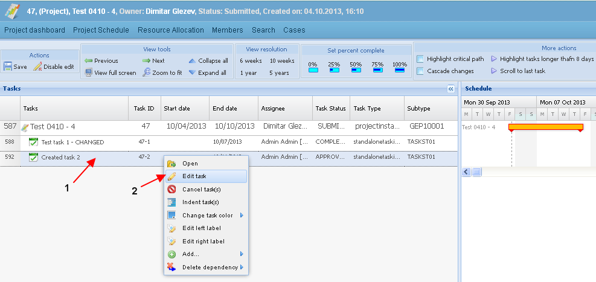
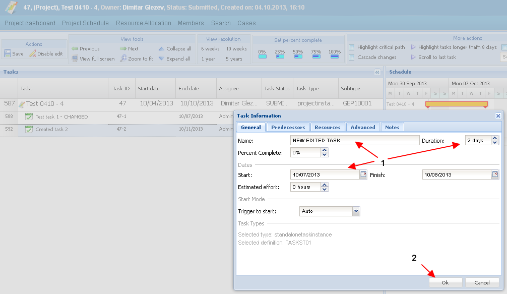
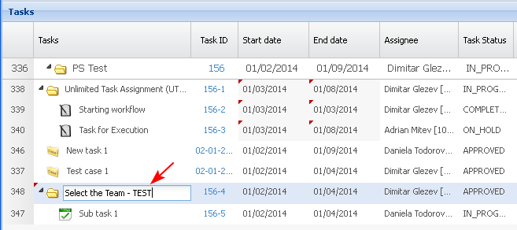
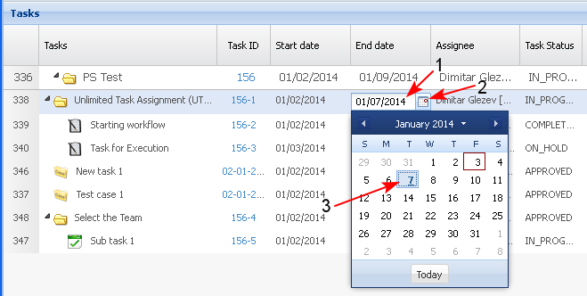
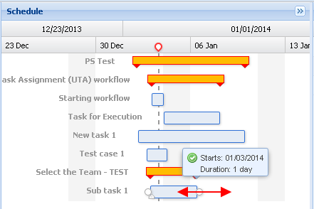
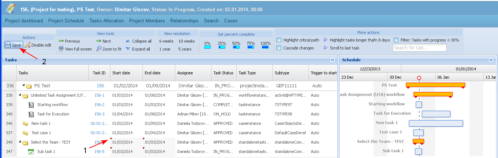

The topic describes which task attributes could be updated and when.
Preconditions
- The activity could not be performed for projects in status "Completed" or "Canceled".
- On task in status "Completed" only the PM is able to adjust the task properties, for example to enter an updated effort number. (If users decide to log effort on a completed task, then they will perform the action "Log time on task".)
- The task status could not be edited manually.
- The user could update task details:
- by selecting a task and then button "Edit task" (1-2).
- by selecting a task and then button "Edit task" (1-2).

- The system opens a pop-up screen with a full list of task details. The user enters the necessary data and saves the changes (1-2).

- by typing new values directly in the Tasks view table - in this case only some of the attributes could be edited.
- by typing new values directly in the Tasks view table - in this case only some of the attributes could be edited.

or

- by updating task details from the Gantt chart view - start and end date, resources, links, etc.

Notes:
1.All tasks details could be edited, except the basic task type for tasks in state different than "Submitted".
2.The task type, Task name and Task description of tasks in state "Submitted" , which are sub-tasks of a summary task of type "Workflow" could not be changed.
- The user edits the necessary task details. The changed values are marked (1). The user selects the button "Save" (2).
